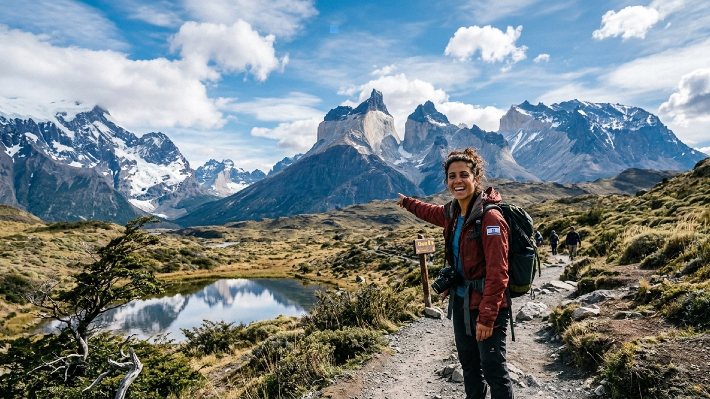

טיול בצ׳ילה 2026 — המדריך המלא

צ׳ילה היא 4,300 קילומטרים של אורך ובקושי 180 קילומטרים של רוחב — רצועה שנדחקה בין האנדים לאוקיינוס השקט. בקצה אחד שלה יש מקומות שבהם לא נמדד גשם מעולם, ובקצה השני קרחונים שמתפוצצים לתוך פיורדים. הדבר המוזר הוא שאת המעבר בין השניים מרגישים לא בקפיצה אלא בהדרגה, קילומטר אחרי קילומטר, מחלון האוטובוס.
למטיילים ישראלים צ׳ילה היא כמעט תמיד חלק מאותה חבילה עם ארגנטינה, בגל העולה שמתחיל בערך מנובמבר — או תחנת הסיום של סיור אויוני מבוליביה, שנוחת ישר בסן פדרו דה אטקמה. היא מסודרת, נוחה, בטוחה יחסית, ויקרה יותר מכל שכנותיה. המדריך הזה מרכז את מה שבאמת צריך לדעת לפני שיוצאים.
מתי כדאי לנסוע לצ׳ילה?
אין תשובה אחת, כי אין למדינה הזאת עונה אחת. מדינה שנמתחת מקו הרוחב של מדבר סהרה ועד לשערי אנטארקטיקה מחייבת לתכנן לפי אזור, לא לפי חודש.
פטגוניה (טורס דל פאינה, פוארטו נטאלס, הקרטרה אוסטרל) — מעשית בעיקר בין נובמבר למרץ. אלה חודשי הקיץ הדרומי: השבילים פתוחים, הרפוחיוס והקמפינגים פועלים, וימי אור עד עשר בלילה. גם אז מזג האוויר משתנה כל שעתיים, והרוח בפאינה יכולה להפיל אדם על השביל. באפריל ובאוקטובר עדיין אפשר, אבל השירותים מצטמצמים; בחורף רוב המסלולים סגורים.
מדבר אטקמה — פתוח כל השנה, וזה היתרון הגדול שלו. השמש כמעט תמיד שם, אבל האזור יושב על 2,400 מטר ומעלה, והלילות קרים באמת — לעיתים מתחת לאפס, בעיקר ביוני–אוגוסט, שהוא דווקא זמן מצוין לצפייה בכוכבים. בקיץ (ינואר–פברואר) יש את מה שמכונה "החורף הבוליביאני": סופות אחר צהריים קצרות שלעיתים סוגרות לכמה שעות את הדרך לגייזרים.
העמק המרכזי — סנטיאגו, ולפראיסו, אזורי היין — אקלים ים-תיכוני שיהיה מוכר לכל ישראלי: קיץ יבש וחם, חורף מתון וגשום. כמעט כל השנה נעים. הקיץ הצ׳יליאני (דצמבר–פברואר) הוא גם עונת החופשות המקומית, ואז ערי החוף מלאות.
אזור האגמים ופוקון — במיטבו בדצמבר–פברואר, כשאפשר לטפס על הר הגעש ויארייקה, לשוט באגמים ולראות את הפסגות המושלגות. באביב ובסתיו יפה ושקט יותר אבל גשום; החורף שם הוא עונת סקי מקומית.
ויזה, כניסה ומעברי גבול
בעלי דרכון ישראלי אינם צריכים ויזה מראש, ומקבלים בדרך כלל 90 יום בכניסה. שומרים על הדרכון בתוקף לחצי שנה קדימה, ושומרים גם את פתק הכניסה שמקבלים בשדה או בגבול — מבקשים אותו ביציאה, ובחלק מבתי המלון הוא מה שמזכה בפטור ממע״מ לתיירים.
ועכשיו הדבר החשוב באמת, שתופס מטיילים בכל שבוע מחדש: לצ׳ילה יש פיקוח חקלאי נוקשה במיוחד. המדינה נקייה ממחלות ומזיקים חקלאיים רבים ומגנה על זה בקנאות. אסור להכניס פירות, ירקות, זרעים, אגוזים, דבש, מוצרי בשר וחלב ומוצרים מן החי — גם לא תפוח אחד שנשאר בתיק מהאוטובוס. בכל כניסה למדינה, כולל במעברים יבשתיים, ממלאים טופס הצהרה, והתיקים עוברים סריקה וכלבים. פריט לא מוצהר יכול לעלות בקנס של מאות דולרים. הכלל פשוט: לפני הגבול מסיימים את הפירות, ואם יש ספק — מצהירים. הצהרה על משהו אסור מסתיימת בזריקה לפח, אי-הצהרה מסתיימת בקנס.
מעברי הגבול המרכזיים:
- לארגנטינה: יש עשרות מעברים לאורך האנדים. הנפוצים הם סנטיאגו–מנדוסה (דרך מעבר ההרים המרשים, שנסגר לפעמים בחורף בגלל שלג), פוקון/אוסורנו–ברילוצ׳ה באזור האגמים, ובדרום — פוארטו נטאלס–אל קלאפטה, שהוא כמעט חובה לכל מי שמשלב את פאינה עם פיץ רוי, וכן המעבר מפוארטו נטאלס לאושואיה דרך טיירה דל פואגו. בפטגוניה נהוג לחצות הלוך ושוב פעמיים-שלוש, וזה לגמרי נורמלי.
- לבוליביה: המסלול המוכר ביותר הוא סיור המלחייה מאויוני, בן שלושה או ארבעה ימים, שמסתיים במעבר הגבול הגבוה בהיטו קחון ומוריד אתכם ישירות בסן פדרו דה אטקמה. זה מהלך נפוץ מאוד: מסיימים את בוליביה במלחייה ומתחילים את צ׳ילה במדבר, בלי לחזור אחורה. שימו לב שהמעבר הזה מהגובה של אויוני (כ-3,700 מטר) לאטקמה הוא ירידה חדה — ושכל שאריות האוכל מהסיור צריכות להיעלם לפני עמדת הביקורת.
- לפרו: המעבר בין אריקה שבצפון צ׳ילה לטקנה שבפרו, קצר ופשוט, ואפשר לעשות אותו במונית שירות משותפת (colectivo) בפחות משעתיים כולל הבירוקרטיה.
כמה עולה טיול בצ׳ילה?
נאמר את זה בלי לרכך: צ׳ילה היא מהמדינות היקרות במסלול, ופער המחירים מול בוליביה ופרו הוא בערך פי שניים. המטבע הוא פסו צ׳יליאני (CLP), והמספרים בו גדולים — ארוחה של 12,000 פסו נשמעת מפחידה עד שמתרגלים. כדאי להוריד את שלוש הספרות האחרונות ולעשות חישוב מהיר בראש.
| הוצאה | מחיר משוער |
|---|---|
| מיטה בחדר משותף בהוסטל | 18–30$ |
| חדר פרטי בסיסי / דירה בשיתוף | 45–80$ |
| ארוחת צהריים עסקית (menú del día) | 6–10$ |
| ארוחה במסעדה רגילה | 15–25$ |
| אוטובוס לילה סנטיאגו–פוארטו מונט (semi-cama) | 30–55$ |
| טיסת פנים (סנטיאגו–קלמה / פונטה ארנס) | 50–130$ בהזמנה מראש |
| כניסה לטורס דל פאינה (כרטיס רב-יומי לזרים) | כ-35$ |
| לילה ברפוחיו בפאינה כולל ארוחות | 90–160$ |
| סיור יום באטקמה (גייזרים / לגונות / ואייה דה לה לונה) | 25–60$ |
| השכרת רכב ליום (לקרטרה אוסטרל) | 60–100$ + דלק |
שורה תחתונה: תרמילאי שישן בהוסטלים, מבשל חלק מהארוחות ונוסע באוטובוסים יוציא 45–65 דולר ביום. פטגוניה מקפיצה את זה: שבוע סביב טורס דל פאינה, כולל כניסה, לינה במסלול, ציוד וטיסה פנימית, נע בקלות בין 600 ל-900 דולר. שלושה שבועות בצ׳ילה עם טיסת פנים אחת וטרק ה-W יסתכמו בערך ב-1,600 עד 2,200 דולר לאדם.
איפה חוסכים באמת: קונים אוכל בסופרמרקטים הגדולים (Líder, Jumbo, Unimarc) ולא בחנויות הקטנות של פוארטו נטאלס, אוכלים את הארוחה העיקרית בצהריים כשיש מנו דל דיה, ושוכרים ציוד טרקים בפוארטו נטאלס במקום לגרור אותו מהארץ.
איך מתניידים בצ׳ילה?
הבעיה בצ׳ילה היא לא איכות התחבורה אלא הגיאוגרפיה. סנטיאגו–סן פדרו דה אטקמה זה כ-22 שעות אוטובוס; סנטיאגו–פונטה ארנס אי אפשר בכלל ברצף יבשתי בתוך צ׳ילה, כי הדרך נקטעת בפיורדים ובקרחונים.
אוטובוסים בין-עירוניים הם עמוד השדרה, והם טובים באמת — מהטובים ביבשת. שלוש רמות: semi-cama (מושב נוח שנפתח חלקית), salón cama (כמעט שכיבה) ו-cama premium (180 מעלות). לנסיעת לילה ארוכה שווה לשלם את ההפרש; ההבדל בין ישן ללא ישן שווה יום שלם בטיול. חברות מוכרות: Turbus, Pullman, Cruz del Sur בדרום. אפשר להזמין באתרים כמו recorrido.cl, אבל בתחנה זה לרוב זול יותר.
טיסות פנים — כאן, בניגוד לרוב המדינות ביבשת, הן שוות את הכסף בלי ויכוח. טיסה של שלוש שעות חוסכת נסיעה של יומיים או מסלול שאינו קיים בכלל. הקווים המשמעותיים: סנטיאגו–קלמה (השער לאטקמה) וסנטיאגו–פונטה ארנס (השער לפאינה). בהזמנה של כמה שבועות מראש המחירים נמוכים; ביום הנסיעה הם קופצים פי שלושה. שימו לב למגבלות הכבודה בכרטיסים הזולים.
מעבורות — בדרום זה לא גימיק אלא תחבורה. המעבורת מפוארטו מונט לפוארטו נטאלס (Navimag) נמשכת כארבעה ימים דרך הפיורדים והיא חוויה בפני עצמה; יש גם קווים קצרים לצ׳ילואה ולאורך הקרטרה אוסטרל, שחלקם חלק בלתי נפרד מהדרך ומחייבים הזמנה מראש בקיץ.
רכב שכור — מיותר ברוב המסלול, וכמעט הכרחי בקרטרה אוסטרל, הכביש האגדי שיורד דרך יערות גשם ממוזגים, אגמים ופיורדים. שם התחבורה הציבורית דלילה, התחנות רחוקות והחופש שווה את העלות. שימו לב: יציאה עם רכב שכור לארגנטינה מחייבת אישור מיוחד מחברת ההשכרה, שמסדירים כשבוע מראש ועולה כסף.
המסלול המומלץ — 18 יום בצ׳ילה
המסלול בנוי מצפון לדרום, בהנחה שהגעתם מבוליביה או מפרו. אפשר להפוך אותו בקלות אם אתם מגיעים מארגנטינה דרך פטגוניה:
- ימים 1–3 · סן פדרו דה אטקמה — כפר חום ונמוך בלב המדבר היבש בעולם. גייזרי אל טאטיו לפני הזריחה, לגונות מלח שצפים בהן, ואייה דה לה לונה בשקיעה, ובלילה שמיים שנחשבים מהצלולים בעולם — לא במקרה יושבות כאן חלק מהמצפים הגדולים בכדור הארץ.
- ימים 4–5 · סנטיאגו — טיסה מקלמה. עיר עם רקע של אנדים מושלגים, שווקים, שכונות כמו לסטאריה ובאריו איטליה, ומוזיאון הזיכרון לתקופת הדיקטטורה, שהוא ביקור לא קל ומומלץ מאוד.
- ימים 6–7 · ולפראיסו — עיר נמל שנשפכת במורד גבעות, כולה גרפיטי, מדרגות ומעליות משופעות בנות מאה שנה. שעה וחצי מסנטיאגו, ואפשר לשלב יום בעמק קסבלנקה או ביקבי המקום.
- ימים 8–10 · פוקון ואזור האגמים — עיירה קטנה מתחת להר הגעש ויארייקה. הטיפוס אליו הוא יום מלא עם קרמפונים וגרזן קרח וסיום מול לוע מעשן; אחריו מעיינות חמים, מפלים ויערות אראוקריה עתיקים.
- ימים 11–12 · פוארטו ואראס וצ׳ילואה — פוארטו ואראס יושבת על אגם ענק מול שני הרי געש, ומשם קצרה הדרך לאי צ׳ילואה: כנסיות עץ, בתי פאלאפיטו על כלונסאות, מזג אוויר משתנה ואוכל ים מצוין.
- יום 13 · פוארטו נטאלס — טיסה מפוארטו מונט לפונטה ארנס והמשך יבשתי. יום להתארגנות: השכרת ציוד, קניית אוכל למסלול והתדרוך של הפארק.
- ימים 14–18 · טורס דל פאינה — טרק ה-W בארבעה עד חמישה ימים: עמק הצרפתים, קרחון גריי, ובסיום העלייה לזריחה מול שלושת מגדלי הגרניט. מי שיש לו שמונה ימים ורגליים טובות יעשה את מעגל ה-O, שמקיף את כל המסיב וכולל את הצד השקט והריק שלו.
יש עוד שבוע? שלוש הרחבות טובות: הקרטרה אוסטרל עם רכב או בטרמפים, מהמסלולים היפים ביבשת ודורש זמן ואורך רוח; איי הפסחא — טיסה נפרדת ויקרה של חמש שעות מסנטיאגו, אבל מקום שלא דומה לשום דבר אחר בעולם ומצדיק את ההוצאה למי שכבר הגיע עד לכאן; או קפיצה מזרחה לאל צ׳לטן שבארגנטינה, שהיא ההשלמה הטבעית של פאינה ורחוקה ממנה נסיעה אחת.
מה חובה לראות בצ׳ילה?
חמש החוויות שכמעט אף אחד לא מוותר עליהן:
- טורס דל פאינה — הפארק שהפך לסמל של פטגוניה. מגדלי גרניט, אגמים בצבע לא-אמיתי וקרחון שנשפך לאגם. גם מי שלא עושה טרק שלם יכול להיכנס ליום אחד ולעלות למירדור. הפארק מאורגן, מפוקח ומצריך תכנון מראש.
- מדבר אטקמה — המקום היבש ביותר על פני כדור הארץ, ובכל זאת מלא לגונות טורקיז, פלמינגו ושדות גייזרים. הלילה שם הוא האטרקציה האמיתית: שביל החלב נראה כמו עשן.
- ולפראיסו — לא אתר טבע אלא עיר שמתפקדת כמוזיאון רחוב פתוח. הכי טוב פשוט ללכת לאיבוד בין הגבעות סרו אלגרה וסרו קונספסיון.
- הר הגעש ויארייקה בפוקון — טיפוס של כחמש שעות על שלג לפסגה מעשנת בגובה 2,847 מטר. לא דורש ניסיון קודם, כן דורש כושר ומזג אוויר.
- הקרטרה אוסטרל — 1,200 קילומטרים של כביש שנשפך דרך יערות, פיורדים ואגמים בקצה העולם. לא אתר בודד אלא מסע שלם.
בטיחות בצ׳ילה — מה באמת צריך לדעת
צ׳ילה נחשבת לאחת המדינות המסודרות והיציבות ביבשת: מים שאפשר לשתות מהברז ברוב האזורים, מערכת בריאות טובה, תשתיות שעובדות. אבל "בטוחה יחסית" זה לא "בלי סיכונים", והסיכונים כאן פשוט אחרים.
גניבות — הבעיה מספר אחת. כייסות וחטיפת תיקים הן מכת מדינה בסנטיאגו ובוולפראיסו, במיוחד באזורי התיירות, בתחנות המטרו הצפופות ובשווקים. הכללים: תיק לפנים ולא לגב, טלפון לא ביד באמצע הרחוב, ובבתי קפה לא להשאיר תיק על הכיסא או מצלמה על השולחן.
לעולם לא להשאיר דבר ברכב חונה. זו האזהרה שכל צ׳יליאני יחזור עליה. פריצה לרכב שכור בחניון של נקודת תצפית או מסלול הליכה היא תרחיש שכיח, ולא משנה אם הדברים בתא המטען. מוציאים הכל, תמיד.
רעידות אדמה הן מציאות גיאולוגית, לא תיאוריה. צ׳ילה יושבת על אחד האזורים הפעילים בעולם, ורעידות קלות מורגשות כמה פעמים בשנה. הבניינים בנויים לזה והמדינה מתורגלת היטב, אז הבהלה מיותרת — אבל שווה לדעת: בזמן רעידה נשארים בפנים, מתרחקים מחלונות ומתמקמים ליד קיר נושא או מתחת לשולחן יציב, ולא רצים למדרגות ובוודאי לא למעלית. אחרי רעידה חזקה באזור חוף — עולים לגובה מיד ולא ממתינים להנחיה, בגלל סיכון צונאמי. שלטי מסלולי הפינוי הצהובים בערי החוף הם בדיוק בשביל זה.
מזג האוויר בפטגוניה הוא הסכנה האמיתית של הדרום. רוחות של 100 קמ״ש אינן נדירות, וארבע עונות ביום אחד הן סטנדרט. שכבות, ג׳קט אטום למים ורוח, כפפות ומשקפי שמש — גם באמצע ינואר. לא סוטים מהשביל המסומן, נרשמים בעמדות הביקורת, ומכבדים סגירת מסלול. בפארק אסור להדליק אש מחוץ לאזורים המיועדים; שרפות גדולות בעבר נגרמו בדיוק כך.
שמש וגובה באטקמה. קרינת השמש שם היא מהחזקות בעולם — כובע, מסנן גבוה ומשקפיים אינם המלצה. הגייזרים של אל טאטיו עומדים על כ-4,300 מטר, ואם באתם ישר מסנטיאגו ולא מבוליביה, כדאי יום התאקלמות לפני. שותים הרבה מים; המדבר מייבש בלי שמרגישים בזה.
שאלות נפוצות
כמה ימים צריך לצ׳ילה?
שבועיים הם מינימום סביר, אבל הם מחייבים לבחור: או הצפון או הדרום, לא שניהם ברוגע. שלושה שבועות מאפשרים לשלב את סנטיאגו וולפראיסו, את אטקמה, את אזור האגמים ואת טרק ה-W בטורס דל פאינה, עם טיסת פנים אחת או שתיים. חודש ומעלה פותח את הקרטרה אוסטרל, את צ׳ילואה ואת החציות ההלוך-ושוב לארגנטינה שכל כך אופייניות לפטגוניה.
כמה מראש צריך להזמין את טורס דל פאינה?
לעונת השיא, דצמבר עד פברואר — חודשים. הלינה במסלול מוגבלת במכסות, וללא אישור לינה לכל לילה אין כניסה לטרק. הקמפינגים הזולים נחטפים ראשונים. מי שמתעורר מאוחר יכול עדיין ליהנות מהפארק בכניסות יום מפוארטו נטאלס, או לתכנן לנובמבר ולמרץ, כשהלחץ קטן משמעותית והנוף לא פחות יפה.
אפשר לשתות מים מהברז בצ׳ילה?
ברוב המדינה כן, וזה חוסך הרבה כסף ופלסטיק — סנטיאגו, ולפראיסו וערי הדרום מספקות מי ברז באיכות טובה. בצפון, ובעיקר באזור אטקמה, המים מכילים ריכוזים גבוהים של מינרלים והטעם לא נעים; שם רוב המקומיים שותים מים מבוקבקים. בטרקים בפטגוניה מקובל לשתות ישירות מהנחלים בתוך הפארק.
מה עם כרטיסי אשראי, מזומן וסים?
צ׳ילה מתקדמת מאוד בתשלומים — כרטיס עובד כמעט בכל מקום, גם בסכומים קטנים. מזומן שווה להחזיק לשווקים, לאוטובוסים מקומיים ולעיירות קטנות בפטגוניה. שימו לב שכספומטים גובים עמלה קבועה לא זניחה למשיכה, ולכן עדיף למשוך סכומים גדולים בפעם אחת. כרטיס סים מקומי (Entel או Movistar) זול, והכיסוי מצוין במסלול המרכזי וכצפוי חלש בקרטרה אוסטרל ובתוך הפארקים.
כמה עולה טיול בצ׳ילה ליום?
מטייל תרמילאי מוציא בממוצע 45 עד 65 דולר ביום: מיטה בהוסטל 18 עד 30 דולר, ארוחת מנו דל דיה 6 עד 10 דולר, ותחבורה יבשתית. צ׳ילה יקרה משמעותית מבוליביה ומפרו — בערך פי שניים. פטגוניה מייקרת הכל: לילה ברפוחיו בטורס דל פאינה עם ארוחות עולה 90 עד 160 דולר, וכניסה לפארק כ-35 דולר.
מתי העונה הטובה ביותר לטייל בצ׳ילה?
זה תלוי לגמרי באזור. פטגוניה וטורס דל פאינה מעשיים בעיקר בנובמבר עד מרץ, כשהשבילים פתוחים והרפוחיוס פועלים. מדבר אטקמה פתוח כל השנה — ימים שמשיים תמיד, אבל לילות קרים מאוד, לעיתים מתחת לאפס. העמק המרכזי, סנטיאגו וולפראיסו הם אקלים ים-תיכוני ונעימים כמעט תמיד, ואזור האגמים במיטבו בדצמבר עד פברואר.
האם ישראלים צריכים ויזה לצ׳ילה, ומה אסור להכניס למדינה?
בעלי דרכון ישראלי אינם צריכים ויזה מראש ומקבלים בדרך כלל 90 יום בכניסה. הנקודה שמפילה מטיילים היא דווקא הפיקוח החקלאי: אסור להכניס לצ׳ילה פירות, ירקות, זרעים, אגוזים, דבש ומוצרים מן החי, וקנס על פריט לא מוצהר יכול להגיע למאות דולרים. יש למלא טופס הצהרה בכל כניסה, גם במעברים יבשתיים מארגנטינה ומבוליביה — ובספק, פשוט להצהיר.
האם צ׳ילה בטוחה למטיילים?
צ׳ילה נחשבת לאחת המדינות היציבות והמסודרות ביבשת, ורוב הטיולים עוברים בלי תקרית. הבעיה המרכזית היא גניבות: כייסות וחטיפת תיקים בסנטיאגו ובוולפראיסו, ופריצות לרכבים חונים — לעולם לא להשאיר דבר גלוי ברכב. מעבר לכך צריך להתייחס ברצינות לרעידות אדמה, למזג האוויר הקיצוני בפטגוניה ולשמש ולגובה באטקמה.
צ׳ילה לא מנסה להרשים אתכם בבת אחת. היא עושה את זה לאט, לאורך 4,300 קילומטרים — ומגלה בכל פעם שיש עוד קצה אחד.